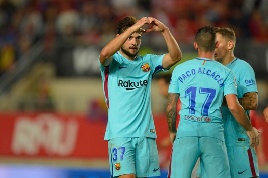
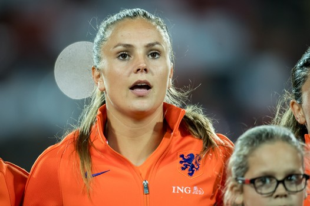
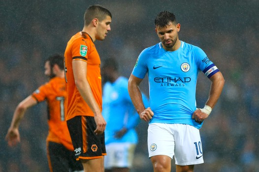
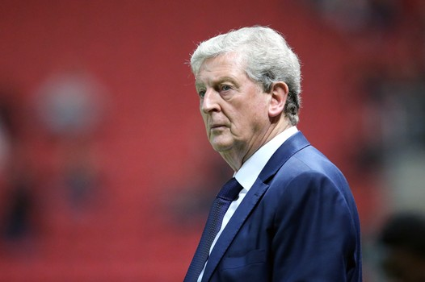

Nationaal Voetbalnieuws!
 Barcelona heeft geen averij opgelopen in het toernooi om de Copa del Rey. Op bezoek bij Real Murcia won de B-ploeg van de Catalanen eenvoudig: 0-3.lees meer
 Lieke Martens heeft na afloop van de zwaarbevochten WK-kwalificatiezege op Noorwegen (1-0) nog eens teruggeblikt op enkele zeer turbulente dagen. Dagen om nooit te vergeten, al zal dat besef pas nu gaan doordringen.lees meer
 Manchester City heeft met alle moeite de volgende ronde in de strijd om de League Cup bereikt. Pas na strafschoppen werd er afgerekend met Wolverhampton Wanderers. lees meer
 Crystal Palace is uitgeschakeld in de strijd om de League Cup door een blamerende nederlaag tegen Bristol City. Manchester United, Leicester City en AFC Bournemouth vervulden wél hun plicht en plaatsten zich voor de kwartfinales. Lees meer